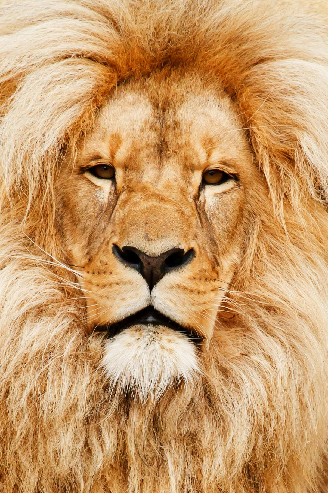

<!DOCTYPE html>
<html lang="en">
  <head>
    <meta charset="UFT-8">
    <title>South African Web developer and Lioness Page</title>
  </head>
 
  <body>
</html>
<h1>Learn about the fierce Lion</h1>

<p>A young lion cub was born under the South African sky in Joburg and this cub gre up to be the new and upcoming developer whom
  I now present to you as Samantha Spencer. Just like the African sun, she shines with her amazing skills in basic HTML. You might feel an intense heat from the passion she is gaining
  everyday from exploring the Development teritory.
</p>

<p>Sam has always been found in the UX/UI Wilderness but have decided to start roaming into the development teritory because this Lion is 
  ready for some new prey. After walking three years in the warm UX/UI bush, Sam first drank a bit of water on the Graphic Design side 
  for a year and then saw some beautiful horizons and bucks in the Development teritory. With bsh being so large, Sam knew that she will
  claim her spot on that side of the South African Safari.
</p>

<p>Don't fear this Lion because she will show you what's beyond the bush. Rather take the time to walk beside her and get to know her or 
  else she migth get hungry and eat you (just kidding). But seriously, I love UX/UI and now I'm taking it a step further, I was born in South
  Africa as a Leo (in August) so the Lion theme fits well with the origin. You'll see I'm a hardworker and I think you'll love me.
</p>
<a href="./contact.html"><h1>Get to know me more.</h1></a>

</body>